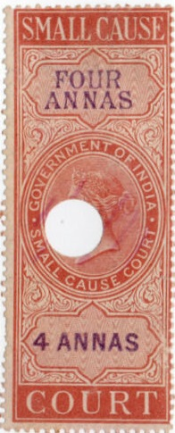
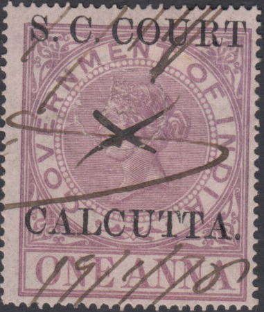
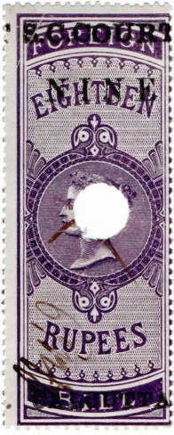

"SMALL CAUSE COURT" overprinted "CANCELLED" (reduced image size)
Return To Catalogue - India - India fiscal stamps, overview
Note: on my website many of the
pictures can not be seen! They are of course present in the
catalogue;
contact me if you want to purchase it.

The following values were issued (all in brown with
violet text): 1 a, 2 a, 3 a, 4 a, 5 a, 6 a, 8 a, 10 a, 12 a, 1 R,
1 1/2 R, 2 R, 3 R, 4 R, 5 R, 6 R, 7 R, 8 R, 9 R, 10 R, 15 R, 20
R, 25 R, 30 R, 40 R, 50 R and 60 R. The Forbin guide says that
the 70 R and 75 R were never used (exept with "COURT
FEES." overprint), the 60 R is extremeley rare (only 13 used
stamps known).
"SMALL CAUSE COURT" overprinted "CANCELLED"
(reduced image size)

With "S.C.COURT. CALCUTTA" overprint (small causes
court)
With "S.C.COURT. CALCUTTA" overprint (small causes
court)
Various types of overprint "S.G.COURT CALCUTTA" 2 a Broad but not so tall overprint at top and bottom 2 a Smaller but taller overprint at top and bottom 4 a Broad but not so tall overprint at top and bottom 4 a Smaller but taller overprint at top and bottom 8 a Smaller but taller overprint at top and bottom 1 R Smaller but taller overprint at top and bottom 2 R Curved overprint at top and bottom 2 R Straight overprint at top and bottom 3 R Shorter overprint at top only 3 R Even shorter overprint at top only (15 mm) 4 R Longer overprint at top only 4 R Shorter overprint at top only 6 R Longer overprint at top only 6 R Shorter overprint at top only 8 R Longer overprint at top only 8 R Shorter overprint at top only 8 R Evenshort overprint at top only (15 mm)

"SMALL CAUSE COURT, CALCUTTA" written vertically, with
or withoug bars on "FOREIGN" and "BILL" here
1 R with further "QUARTER ANNA." surcharge
Bill of Draft with circular "COURT OF S.CAUSES HALF
ANNA" overprint and straigth "CALCUTTA." Also a
similar "ONE ANNA" overprint.
The overprint exists with "CALCUTTA" left or right.
There exist three different kind of these overprints (different
sizes).
Misprint with "C.S.COURT" instead of
"S.C.COURT", apparently the 5 R, 10 R, 20 R and 50 R
exist with this misprint.

1869: With horizontal overprint "SMALL CAUSE COURT,
CALCUTTA": the values 2 a violet, 4 a green, 8 a blue, 1 R
red, 2 R lilac, 4 R brown, 5 R violet, 6 R green, 7 R orange, 9 R
green, 10 R red, 20 R brown, 30 R orange and 50 R grey were
overprinted.
These small court fiscal stamps for Madras are very rare; I have never seen them.
{kind=link}